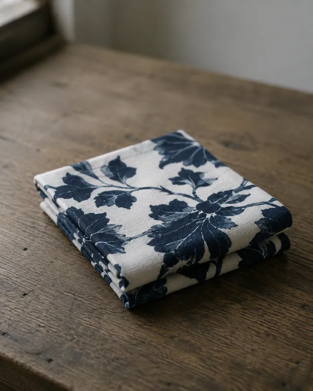
手拭
Tenugui
Order
ブランド、企業、個人のお客様まで。
染色から仕立てまでのものづくり。
For brands, companies, and individuals.
Every step, from dyeing to finishing.
つくれるもの
Products
手拭のような小さなものから、OEMでの別注まで。まずは一例としてご覧ください。
From small items like tenugui to full OEM production — here are a few examples to start from.

手拭
Tenugui
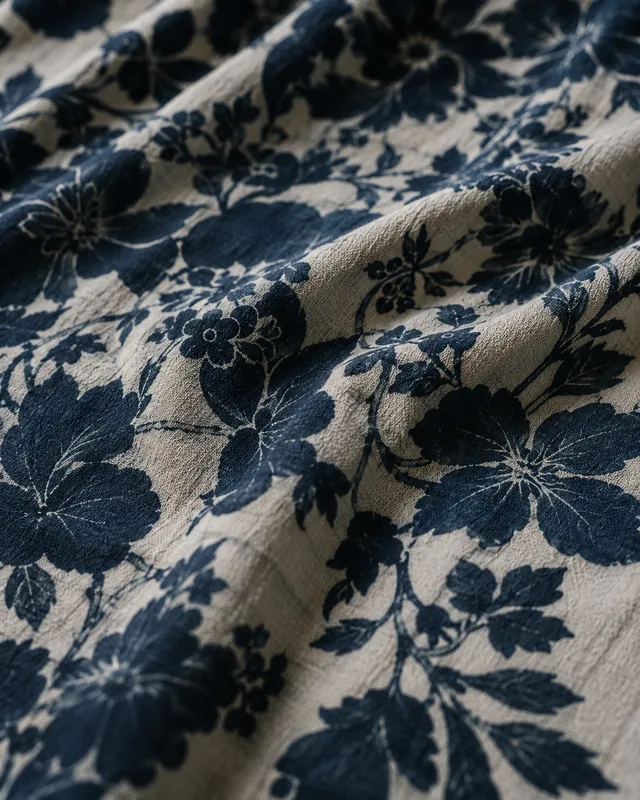
浴衣
Yukata
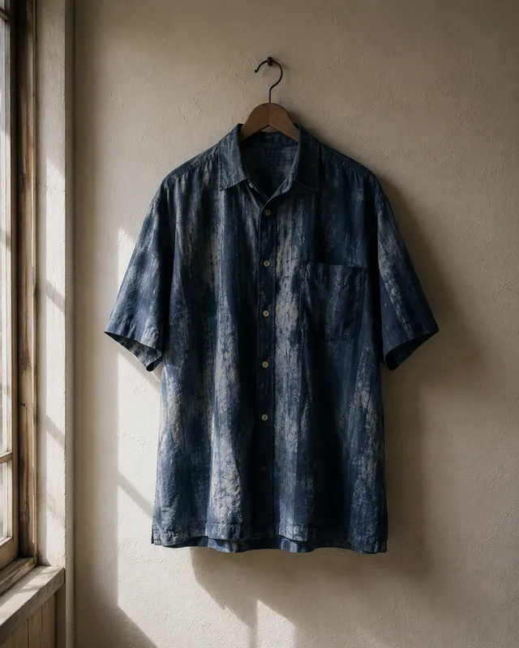
シャツ
Shirt
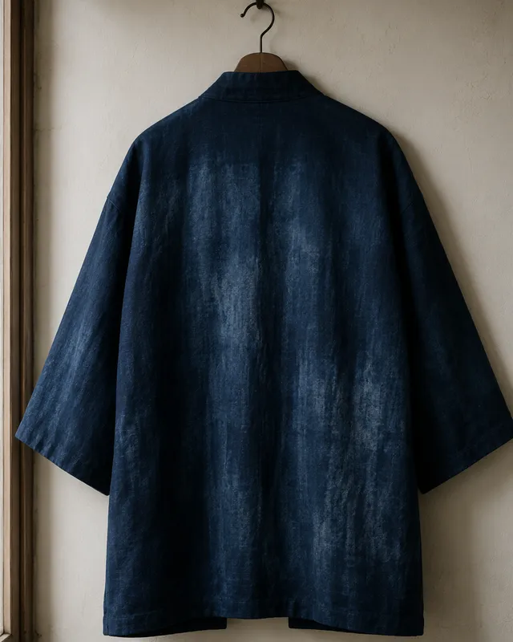
半纏
Hanten
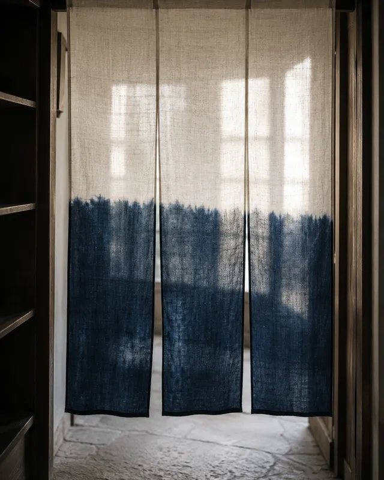
のれん
Noren
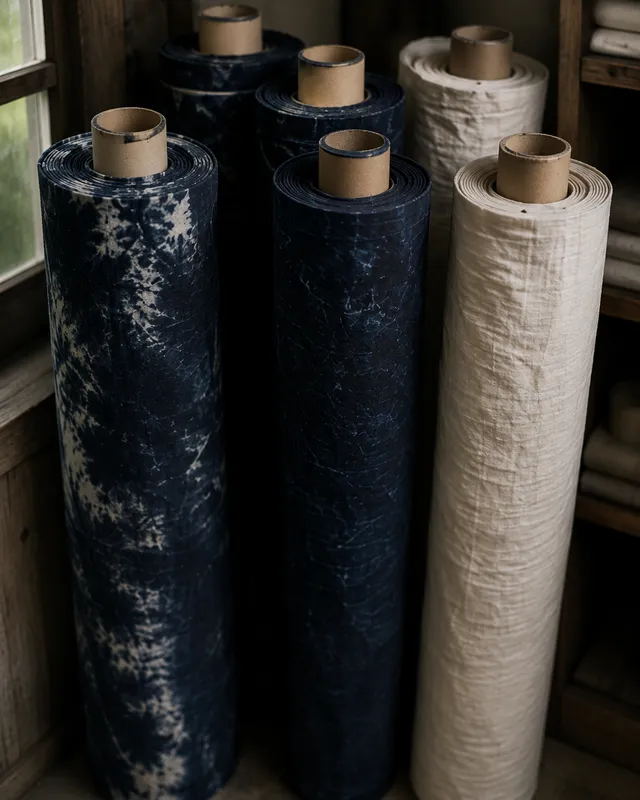
反物
Fabric Roll
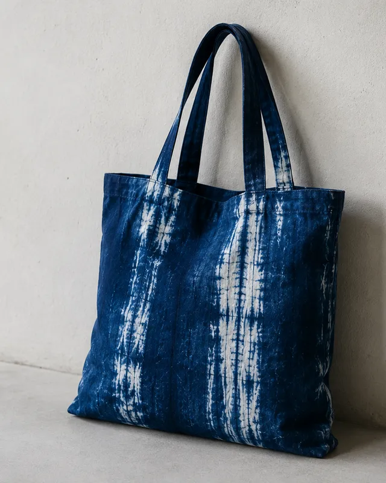
バッグ
Bag
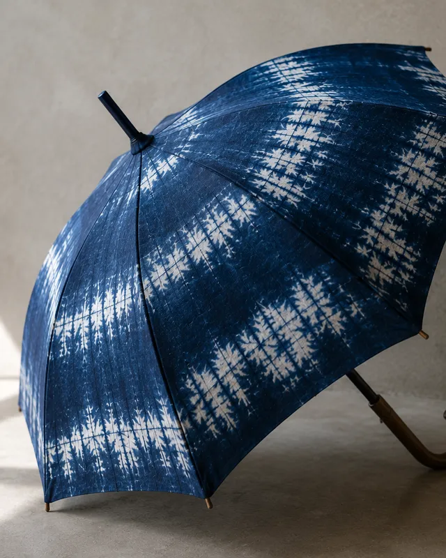
傘
Umbrella
制作フロー
Process
ご相談
Consultation
仕様決定
Specification
お見積り
Estimate
試作
Prototype
制作
Production
納品
Delivery
数量・納期の目安
MOQ & Lead Time
製品・仕様・時期により変動します。まずは目安としてご参照ください。
Actual figures vary by product, specification, and season. Please use these as a rough guide.
最小ロット
Minimum Order Quantity
手拭
Tenugui
50枚〜
50 pcs〜
シャツ
Shirt
30着〜
30 pcs〜
浴衣・反物
Yukata / Fabric
応相談
Please inquire
納期
Lead Time
在庫生地
Stock fabric
約4週間〜
approx. 4 weeks〜
取り寄せ生地
Ordered fabric
約8週間〜
approx. 8 weeks〜
繁忙期
Peak season
別途相談
Please inquire
染色方法
Dyeing Methods
製品・デザイン・数量に合わせて、最適な染色方法をご提案します。
We suggest the dyeing method best suited to your product, design, and quantity.
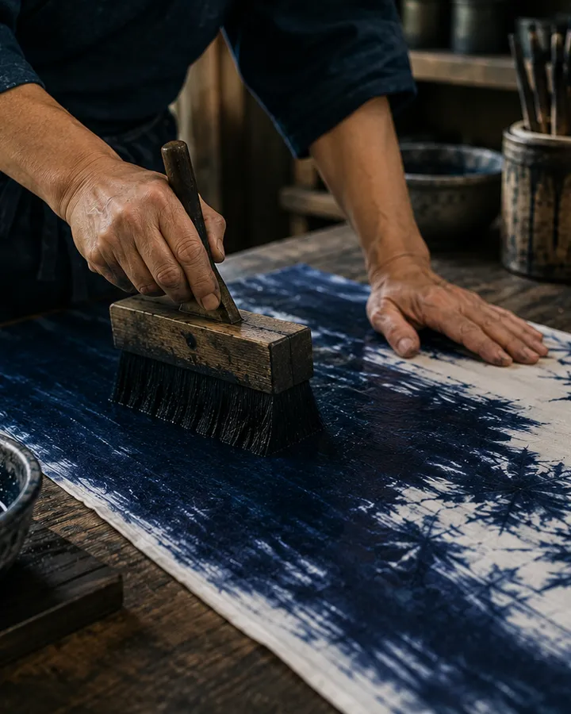
注染
Chusen
生地の裏表を同時に染める、日本独自の技法。多色を一度に扱え、にじみや濃淡に手仕事らしい表情が出ます。
A traditional Japanese technique that dyes both sides of the fabric at once. Multiple colors can be applied together, with soft bleeds that show the maker's hand.
向いている製品：手拭・浴衣・のれんなど
Best for: tenugui, yukata, noren
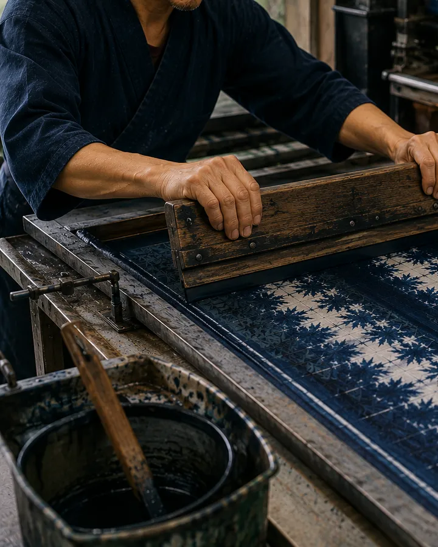
捺染
Nassen
生地の上に色をのせる印刷に近い技法。細かい柄や多色使いも安定して再現できます。
A print-like technique that applies color onto the fabric surface. Well suited to fine patterns and multiple colors with consistent results.
向いている製品：シャツ・バッグ・雑貨など
Best for: shirts, bags, general goods
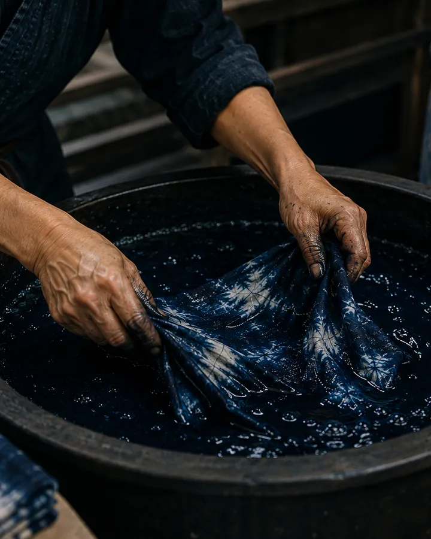
藍染
Aizome
天然の藍を用いた伝統的な染色法。深みのある色合いと、使うほどに変化していく風合いが特徴です。
Traditional dyeing using natural indigo. Known for its deep tone and the way it develops character with use over time.
向いている製品：シャツ・バッグ・傘など
Best for: shirts, bags, umbrellas
生地
Fabrics
用途や仕上がりのイメージに合わせて、生地からご提案します。
We help you choose the right fabric for your intended use and finish.
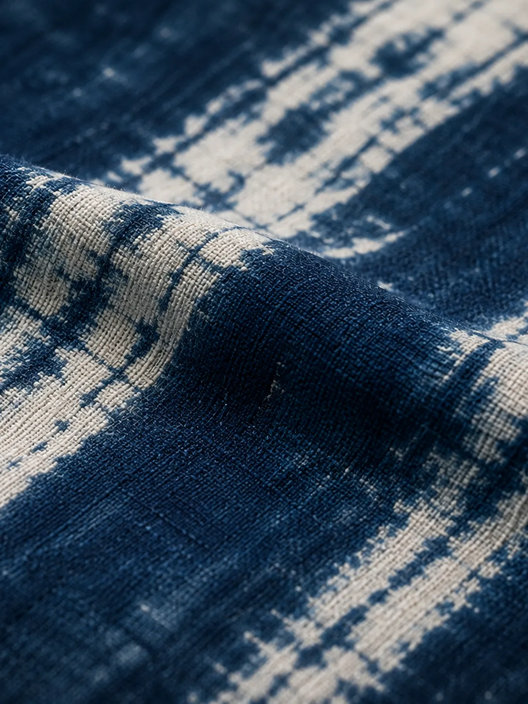
普段づかいの生地は、肌ざわりの柔らかさと洗濯のしやすさを重視してお選びします。手拭や浴衣など、日常に近い製品に向いています。
For everyday items, we prioritize a soft hand-feel and easy care — well suited to products like tenugui and yukata that live close to daily life.
特別な仕立てには、厚みや光沢感のある生地もご用意できます。ブランドの別注や記念品など、印象を重視したい製品に。
For special orders, we also offer fabrics with more weight or sheen — ideal for brand collaborations and commemorative pieces where impression matters.
こんなご相談も承ります
Consultation
「まだ何も決まっていない」段階でも構いません。お気軽にお声がけください。
Even if nothing is decided yet, feel free to reach out — we're happy to start from wherever you are.
デザインから相談したい
I'd like to start from design ideas
データはある
I already have artwork or data
生地を持ち込みたい
I'd like to bring my own fabric
OEMを依頼したい
I'd like to request OEM production
数量がまだ決まっていない
I haven't decided on quantity yet
FAQ
製品によって異なりますが、手拭で50枚程度から承っています。詳しくはお気軽にご相談ください。
It depends on the product — for example, tenugui start from around 50 pieces. Please contact us for details.
可能です。データの形式によって調整が必要な場合がありますので、ご相談時にお知らせください。
Yes. Depending on the file format, some adjustment may be needed — please let us know when you contact us.
生地や工程により異なりますが、目安として4〜8週間程度です。繁忙期は別途ご相談ください。
It varies by fabric and process, but typically 4–8 weeks. Please inquire separately during peak season.
染色方法によって得意な色数が異なります。ご希望のデザインに合わせてご提案します。
The number of colors that work well depends on the dyeing method. We'll suggest the best fit for your design.
可能です。本製作前に試作でご確認いただくことをおすすめしています。
Yes. We recommend confirming with a prototype before full production.
銀行振込に対応しています。お見積り時に詳細をご案内します。
We accept bank transfer. Details will be provided at the time of quotation.
作りたいものが明確でない段階でも構いません。
用途やイメージから、一緒に形を考えていきます。
You don't need to have everything figured out.
We'll work through the details together.